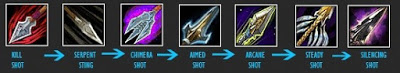
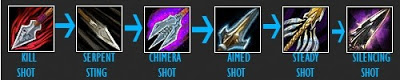

3. Способности и заклинания
Метка охотоника — Сила атаки дальнего боя всех персонажей, атакующих эту цель, увеличена на 500
Укус Змеи — 242 ед. урона от сил природы раз в 3 сек.
Выстрел Химеры — Вы наносите 125% урона от оружия, обновляя действие текущего «Укуса». Кроме того, в зависимости от вида «Укуса» активируется дополнительный эффект
Глушащий выстрел — Выстрел, наносящий 50% урона от оружия и вызывающий у цели немоту на 3 сек. Если противник не является другим игроком, он не сможет произносить заклинания в течение 3 сек.
Прицельный выстрел — Увеличивает урон в дальнем бою на 1750 и понижает эффективность применяемого к цели лечения на 50%
Чародейский выстрел — Мгновенный выстрел, наносящий ед. урона от тайной магии
Верный выстрел — Верный выстрел, наносящий противнику стандартный урон от оружия, урон от боеприпасов и еще ед. урона. Целям, испытывающим головокружение, наносит 175 ед. урона дополнительно
Быстрая стрельба — Повышает скорость атаки в дальнем бою на 100% в течение 10 сек.
Перенаправление — Угроза, создаваемая вашей следующей атакой, а также любыми вашими действиями, которые последуют за ней в течение 4 sec., будет перенаправлена на выбранного участника группы или рейда
Первая ротация для первой раскладки талантов:

Вторая для второй раскладки талантов:

Важно!
Не забывайте вешать на цель Метку охотника
После пула вешайте на танка свой баф Перенаправление
Убийственный выстрел, самая сильная ДПС способность, наибольший урон наносит цели, у которой осталось 20% хп, при достижении этого порога, является самым приоритетным спеллом в ротации, т.е. откатился, сразу используем
Дебаф от способности Укус змеи должен все время находится на цели, есть смысл использовать только на те цели, которые будут жить достаточно долго, т.е. использовать его на мелких мобов тратить время в пустую
Выстрел химеры используется только после того, как на цели появится Дефаб от Укуса змеи, это позволит наиболее эффективно использовать эту способность;
Для сброса агро актуально использовать способность Притвориться мертвым
Лучший выбор pve питомца — волк. Главная отличительная способность волка является Неистовый вой, которая дается всему рейду.Все заклинания питомца используйте по кд, а также не забывайте про Зов дикой природы под бл, тогда ДПС будит максимальным.
Большие:
Символ укуса змеи — Увеличивает время действия способности «Укус змеи» на 6 сек.
Символ верного выстрела — Увеличивает урон, наносимый способностью «Верный выстрел», на 10%, если цель находится под воздействием способности «Укус змеи»
Символ убийственного выстрела — Сокращает время восстановления способности «Убийственный выстрел» на 6 сек./li>
Малые:
Символ ложной смерти — Сокращает время восстановления способности «Притвориться мертвым» на 5 сек
Символ лечения питомца — Заклинание «Лечение питомца» слегка улучшает настроение вашего питомца
Символ воскрешения питомца — Сокращает задержку применения способности «Воскрешение питомца» при получении урона на 100%
Голова — Магический знак страданий
Плечи — Великое начертание секиры
Спина- Чары для плаща — ловкость V
Грудь — Свиток чар для нагрудника — Все характеристики VII
Запястья — Свиток чар для наручей — штурм II
Кисти рук — Свиток чар для перчаток — ловкость IV
Пояс — Извечная поясная пряжка
Ноги — Накладки для поножей из ледяной чешуи
Ступни — Свиток чар для обуви — ледопроходец
Двуручное оружие — Свиток чар для двуручного оружия — резня
Одноручное оружие — Свиток чар для оружия — могущество III
Оружие дальнего боя — Прицел «Пронзатель сердец»
ММета — Алмаз жестокого землеправителя +21 к ловкости и +3% к критическому урону.
Красные — Растрескавшийся багровый рубин +20 к рейтингу пробивания брони
Синие — Слеза кошмаров + 10 ко всем характеристикам, Всевластный страхолит +10 к рейтингу пробивания брони и +15 к выносливости
Желтые — Прочный самоцвет бури +20 к рейтингу меткости
Важно! Для сбора АрП рекомендуем во все гнезда вставлять Растрескавшийся багровый рубин, но перед этим не забудьте активизироватьАлмаз жестокого землеправителя
Голова — Освященный головной убор ан'кахарского охотника за кровью
Шея — Коготь жестокости Синдрагосы
Плечи — Освященный наплеч ан'кахарского охотника за кровью
Плащ — Плащ убийцы Мрачного Свода
Грудь — Освященный мундир ан'кахарского охотника за кровью
Запястья — Тяжелые наручи охотника Плети, Поручи полной тени
Перчатки — Освященные боевые рукавицы ан'кахарского охотника за кровью
Пояс — Шнурованный ремень неруб'арского ловца
Штаны — Освященные набедренники ан'кахарского охотника за кровью
Ботинки — Возвращающиеся шаги
Кольцо 1 — Сапфировое кольцо ледяного наследия, Кольцо костяного колосса
Кольцо 2 — Печатка Сумеречного Молота
Аксессуар 1 — Заостренная сумеречная чешуя
Аксессуар 2 — Воля Смертоносного
Оружие ближнего боя — Оскверненная ветвь Нордрассила, Клинок отравленной крови
Оружие дальнего боя — Самозарядный длинный лук Зода, Пронзатель сердец Ветрокрылых
11. Аддоны
Recount — отобразит на сколько вы эффективны
Omen — подскажет вам о смене танка, а также насколько вы близки к срыву агро
OmniCC — отображает время о завершении перезарядки заклинания на иконке скила
ClassTimer или Quartz — поможет отследить ваши дебаффы.
Power Source — при наведении на баф, дебаф в тултипе показывает ник персонажа который вас бафнул либо наложил на вас проклятие.
RangeColors — подскажет если вы не достаете до цели
Doom CooldownPulse — по истечению перезарядки заклинания отображает его вспышкой посреди экран
SpellFlash — поможет новичкам с ротацией
Макрос для удобности восполнить ману, и назад переключится на дамаг.
#showtooltip
/castsequence !Дух дракондора, !Дух змеи
Следующий макросы намного упрощают нам жизнь, не надо будет нажимать много кнопок, и при этом еще и Дпс растет.
#showtooltip Выстрел химеры
/cast Команда «Взять!»
/cast Глушащий выстрел
/cast Выстрел химеры